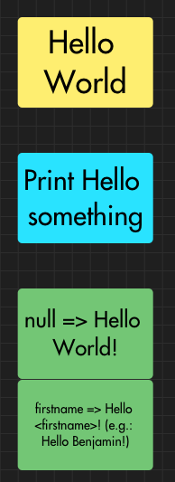
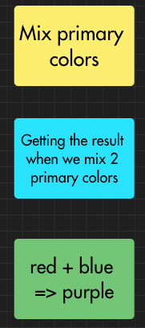

Tests
How developers test their code
Environment: iOS Application, XCode IDE
Press 'Space' to continue
Press 'n' to show/hide notes
Press 's' for speaker mode
Introduction/Menu
- How to write unit a test
- Test Driven Development
- Behavior Driven Development
- UI Tests
Let's start a Hello World
Principle: When you have a firstname, print "Hello firstname!" (replacing firstname by the real value). Otherwise, say "Hello World"
3 amigos / Example mapping
What we need to test
- Values defined in a rule
- Boundary cases
- Special values (null, 0, empty string...)
Too many cases => you may use a statistic approach (e.g. pair wise)
Let's write some code
struct HelloWorldResult {
let string: String?
init(_ string: String?) {
self.string = string
}
var result: String {
"Hello \(string ?? "World")!"
}
}
How to write unit test
3A rule:
- Arrange:
Setting up the context
- Act:
Calling the code to test
- Assert:
Analyzing the result
Let's write the tests 1/2
1rst test
func test_should_return_hello_world_when_string_is_nil() throws {
// Arrange
let expected = "Hello World!"
// Act
let result = HelloWorldResult(nil).result
// Assert
XCTAssertEqual(result, expected)
}
Let's write the tests 2/2
2nd test
func test_should_return_hello_with_name_when_string_is_a_name() throws {
// Arrange
let name = "Benjamin"
let expected = "Hello \(name)!"
// Act
let result = HelloWorldResult(name).result
// Assert
XCTAssertEqual(result, expected)
}
Test Driven Development
- Test first (before coding)
- Red/Green/Refactor
Exercise
We want to get the color when we mix 2 primary colors. Please fill the example mapping.
Let's write some code 1/3
We need:
- The definition of primary color
- A function that mixes the 2 primary colors and returns a color
Let's write some code 2/3
The definition of primary color
enum PrimaryColorResult {
case red
case blue
case yellow
}
Let's write some code 3/3
A function that mixes the 2 primary colors and returns a color
struct MixColorsResult {
func mixColors(_ color1: PrimaryColorResult, _ color2: PrimaryColorResult) -> UIColor {
UIColor.black // Unexpected color
}
}
Let's write the first test (Red)
The test fails and that's great!
func test_should_return_red_when_both_colors_red() throws {
// Arrange
let color = PrimaryColorResult.red
let expected = UIColor.red
// Act
let result = MixColorsResult().mixColors(color, color)
// Assert
XCTAssertEqual(expected, result)
}
Let's write the first test (Green)
The test is in success. Now you can refactor if needed
struct MixColorsResult {
func mixColors(_ color1: PrimaryColorResult, _ color2: PrimaryColorResult) -> UIColor {
if color1 == red && color2 == red {
return UIColor.red
}
return UIColor.black // Unexpected color
}
}
Let's go further 1/2
Using the red/green method, we developed 3 cases: red/red, blue/blue, yellow/yellow
Let's go further 2/2
struct MixColorsResult {
func mixColors(_ color1: PrimaryColorResult, _ color2: PrimaryColorResult) -> UIColor {
if color1 == red && color2 == red {
return UIColor.red
}
if color1 == blue && color2 == blue {
return UIColor.blue
}
if color1 == yellow && color2 == yellow {
return UIColor.yellow
}
return UIColor.black // Unexpected color
}
}
Refactor
enum PrimaryColorResult {
case red
case blue
case yellow
var color: UIColor {
switch self {
case .red:
return UIColor.red
case .blue:
return UIColor.blue
case .yellow:
return UIColor.yellow
}
}
}
struct MixColorsResult {
func mixColors(_ color1: PrimaryColorResult, _ color2: PrimaryColorResult) -> UIColor {
if color1 == color2 {
return color1.color
}
return UIColor.black // Unexpected color
}
}
Final tests
func test_should_return_red_when_both_colors_red() throws {
// Arrange
let color = PrimaryColorResult.red
let expected = UIColor.red
// Act
let result = MixColorsResult().mixColors(color, color)
// Assert
XCTAssertEqual(expected, result)
}
func test_should_return_blue_when_both_colors_blue() throws {
// Arrange
let color = PrimaryColorResult.blue
let expected = UIColor.blue
// Act
let result = MixColorsResult().mixColors(color, color)
// Assert
XCTAssertEqual(expected, result)
}
func test_should_return_yellow_when_both_colors_yellow() throws {
// Arrange
let color = PrimaryColorResult.yellow
let expected = UIColor.yellow
// Act
let result = MixColorsResult().mixColors(color, color)
// Assert
XCTAssertEqual(expected, result)
}
func test_should_return_green_when_colors_yellow_and_blue() throws {
// Arrange
let color1 = PrimaryColorResult.yellow
let color2 = PrimaryColorResult.blue
let expected = UIColor.green
// Act
let result = MixColorsResult().mixColors(color1, color2)
// Assert
XCTAssertEqual(expected, result)
}
func test_should_return_green_when_colors_blue_and_yellow() throws {
// Arrange
let color1 = PrimaryColorResult.blue
let color2 = PrimaryColorResult.yellow
let expected = UIColor.green
// Act
let result = MixColorsResult().mixColors(color1, color2)
// Assert
XCTAssertEqual(expected, result)
}
func test_should_return_purple_when_colors_blue_and_red() throws {
// Arrange
let color1 = PrimaryColorResult.blue
let color2 = PrimaryColorResult.red
let expected = UIColor.purple
// Act
let result = MixColorsResult().mixColors(color1, color2)
// Assert
XCTAssertEqual(expected, result)
}
func test_should_return_purple_when_colors_red_and_blue() throws {
// Arrange
let color1 = PrimaryColorResult.red
let color2 = PrimaryColorResult.blue
let expected = UIColor.purple
// Act
let result = MixColorsResult().mixColors(color1, color2)
// Assert
XCTAssertEqual(expected, result)
}
func test_should_return_orange_when_colors_red_and_yellow() throws {
// Arrange
let color1 = PrimaryColorResult.red
let color2 = PrimaryColorResult.yellow
let expected = UIColor.orange
// Act
let result = MixColorsResult().mixColors(color1, color2)
// Assert
XCTAssertEqual(expected, result)
}
func test_should_return_orange_when_colors_yellow_and_red() throws {
// Arrange
let color1 = PrimaryColorResult.yellow
let color2 = PrimaryColorResult.red
let expected = UIColor.orange
// Act
let result = MixColorsResult().mixColors(color1, color2)
// Assert
XCTAssertEqual(expected, result)
}
Final code
enum PrimaryColorResult {
case red
case blue
case yellow
var color: UIColor {
switch self {
case .red:
return UIColor.red
case .blue:
return UIColor.blue
case .yellow:
return UIColor.yellow
}
}
}
struct MixColorsResult {
func mixColors(_ color1: PrimaryColorResult, _ color2: PrimaryColorResult) -> UIColor {
switch (color1, color2) {
case (.red, .blue), (.blue, .red):
return UIColor.purple
case (.yellow, .red), (.red, .yellow):
return UIColor.orange
case (.blue, .yellow), (.yellow, .blue):
return UIColor.green
default:
return color1.color
}
}
}
Behavior Driven Development
- Close to the UI
- Passing through the layers is allowed (only data layer is mocked/stubbed)
- May use Gherkin language
Gherkin example
Feature: Mixing primary colors
Scenario Outline: Primary Colors
Given 1rst color is <color1>
And 2nd color is <color2>
When I mix
Then the result is <result>
Examples:
| color1 | color2 | result |
| red | red | red |
| yellow | yellow | yellow |
| blue | blue | blue |
| red | yellow | orange |
| red | blue | purple |
| blue | yellow | green |
| blue | red | purple |
| yellow | red | orange |
| yellow | blue | green |
Run the tests
// We use XCTest_Gherkin library to run Gherkin tests
func test_gherkin() throws {
NativeRunner.runScenario(featureFile: "MixColorsResultTests.feature",
scenario: "Primary Colors",
testCase: self)
}
Mapping between the tests and the Gherkin file
private final class StepsDefinition: StepDefiner {
private var result: UIColor?
private var color1: PrimaryColorResult?
private var color2: PrimaryColorResult?
private enum ColorGherkin: String, MatchedStringRepresentable {
init?(fromMatch: String) {
self.init(rawValue: fromMatch)
}
case red = "red"
case blue = "blue"
case yellow = "yellow"
case purple = "purple"
case green = "green"
case orange = "orange"
var value: UIColor {
switch self {
case .red: return UIColor.red
case .blue: return UIColor.blue
case .yellow: return UIColor.yellow
case .green: return UIColor.green
case .orange: return UIColor.orange
case .purple: return UIColor.purple
}
}
var primaryValue: PrimaryColorResult? {
switch self {
case .blue: return .blue
case .yellow: return .yellow
case .red: return .red
default:
return nil
}
}
}
override func defineSteps() {
step("1rst color is (.*)") { (match: ColorGherkin) in
self.color1 = match.primaryValue
}
step("2nd color is (.*)") { (match: ColorGherkin) in
self.color2 = match.primaryValue
}
step("I mix") {
self.result = MixColorsResult().mixColors(self.color1!, self.color2!)
}
step("the result is (.*)") { (match: ColorGherkin) in
XCTAssertEqual(self.result, match.value)
}
}
}
UI tests
- Language dependent
- Takes time
- Difficult to maintain
- Must be done at the end of a release
- Cannot replace a tester
Snapshot UI tests
Source Code: Click here
Github: benjdum59
Website: benjdum59.github.io
Mail: benjamin.dumont.pro@gmail.com
Go to Homepage